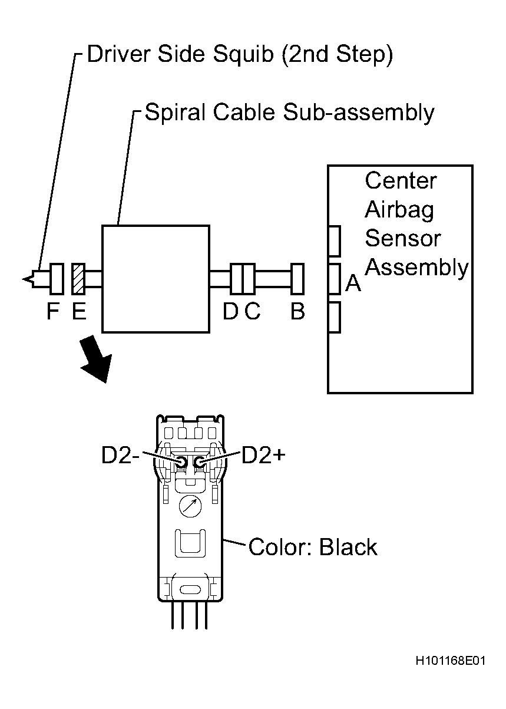
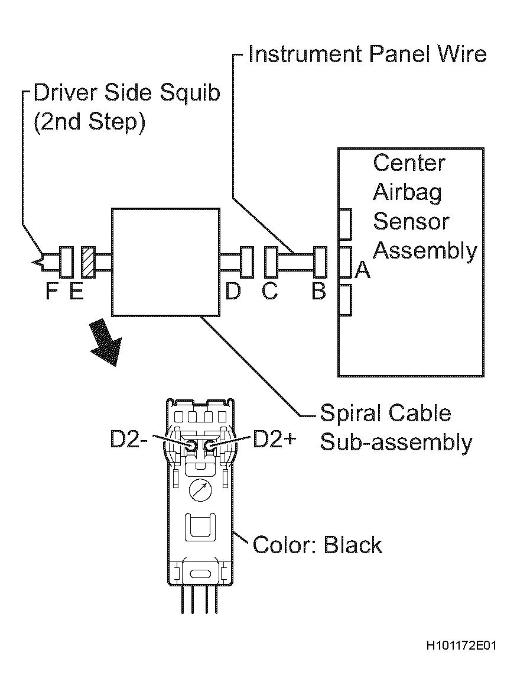

Inspection Procedure
- CHECK DRIVER SIDE SQUIB (CENTER AIRBAG SENSOR ASSEMBLY - STEERING PAD)
- Turn the ignition switch to the LOCK position.
- Disconnect the negative (-) terminal cable from the battery, and wait for at least 90 seconds.
- Disconnect the connectors from the center airbag sensor assembly and the steering pad.
- Measure the resistance according to the value(s) in the table below.
Standard resistance
TESTER CONNECTION - SPECIFIED CONDITION (RESISTANCE)Tester Connection (Connector "E") Specified Condition D2+ - Body ground 1 MΩ or higher D2- - Body ground
NG : Go to step 5

Courtesy of © TOYOTA, LICENSE AGREEMENT TMS1002OK : Go to Next Step
- CHECK CENTER AIRBAG SENSOR ASSEMBLY
- Connect the connector to the center airbag sensor assembly.
- Using a service wire, connect terminals D2+ and D2- of connector "E".NOTE:
- Twist the end of the service wire in order to insert to the connector.
- Do not forcibly insert the twisted service wire into the terminals of the connector when connecting.
- Connect the negative (-) terminal cable to the battery, and wait for at least 2 seconds.
- Turn the ignition switch to the ON position, and wait for at least 60 seconds.
- Clear the stored DTCs in the memory (see DTC CHECK / CLEAR ).
- Turn the ignition switch to the LOCK position.
- Turn the ignition switch to the ON position, and wait for at least 60 seconds.
- Check for the DTCs (see DTC CHECK / CLEAR
).
OK:
DTC B1182/19 is not output.
HINT:
Codes other than code B1182/19 may be output at this time, but they are not related to this check.
NG : REPLACE CENTER AIRBAG SENSOR ASSEMBLY
 Courtesy of © TOYOTA, LICENSE AGREEMENT TMS1002
Courtesy of © TOYOTA, LICENSE AGREEMENT TMS1002OK : Go to Next Step
- CHECK STEERING PAD (DRIVER SIDE SQUIB, 2nd STEP)
- Turn the ignition switch to the LOCK position.
- Disconnect the negative (-) terminal cable from the battery, and wait for at least 90 seconds.
- Disconnect the service wire from the connector "E".
- Connect the connectors to the steering pad.
- Connect the negative (-) terminal cable to the battery, and wait for at least 2 seconds.
- Turn the ignition switch to the ON position, and wait for at least 60 seconds.
- Clear the stored DTCs in the memory (see DTC CHECK / CLEAR ).
- Turn the ignition switch to the LOCK position.
- Turn the ignition switch to the ON position, and wait for at least 60 seconds.
- Check for the DTCs (see DTC CHECK / CLEAR
).
OK:
DTC B1182/19 is not output.
HINT:
Codes other than code B1182/19 may be output at this time, but they are not related to this check.
NG : REPLACE STEERING PAD
 Courtesy of © TOYOTA, LICENSE AGREEMENT TMS1002
Courtesy of © TOYOTA, LICENSE AGREEMENT TMS1002OK : PROBLEM SYMPTOMS SIMULATION
- CHECK INSTRUMENT PANEL WIRE
- Disconnect the instrument panel wire connector from the spiral cable sub-assembly.
- Measure the resistance according to the value(s) in the table below.
Standard resistance
TESTER CONNECTION - SPECIFIED CONDITION (RESISTANCE)Tester Connection (Connector "C") Specified Condition A13-4 (D2+) - Body ground 1 MΩ or higher A13-3 (D2-) - Body ground
NG : REPAIR OR REPLACE INSTRUMENT PANEL WIRE
OK : Go to Next Step
- CHECK SPIRAL CABLE SUB-ASSEMBLY
- Measure the resistance according to the value(s) in the table below.
Standard resistance
TESTER CONNECTION - SPECIFIED CONDITION (RESISTANCE)Tester Connection (Connector "E") Specified Condition D2+ - Body ground 1 MΩ or higher D2- - Body ground
NG : REPLACE SPIRAL CABLE SUB-ASSEMBLY

Courtesy of © TOYOTA, LICENSE AGREEMENT TMS1002OK : PROBLEM SYMPTOMS SIMULATION
- Measure the resistance according to the value(s) in the table below.